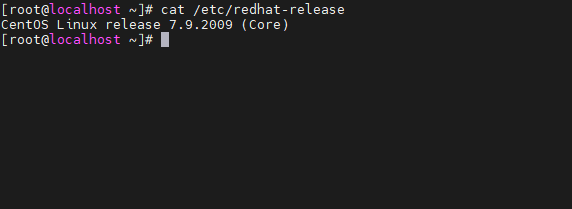
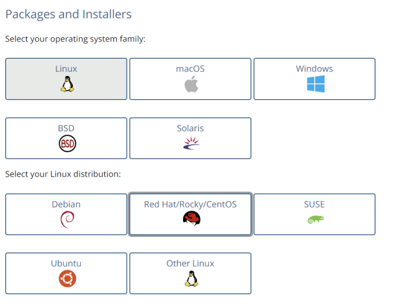
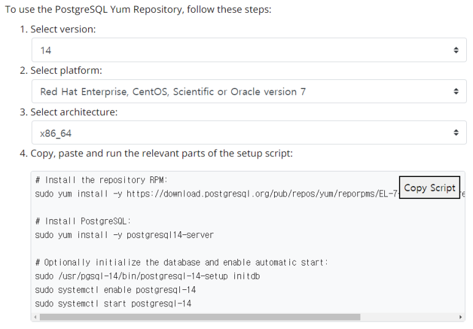
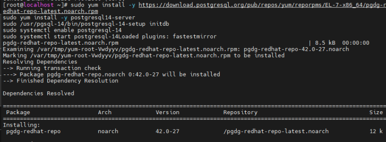
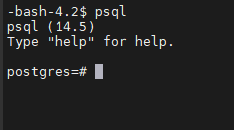

(입문) 02. PostgreSQL 설치
Table of Contents
PostgreSQL 설치하기에 앞서
우선 PostgreSQL의 환경적인 특성을 알아야 한다.
PostgreSQL은 운영체제에 따라 크게 두가지로 나뉜다.
- Linux PostgreSQL
- Non Linux PostgreSQL
Linux PostgreSQL은 PG의 근본으로 생각하면 된다.
현재 PostgreSQL 커뮤니티는 Linux만을 공식지원하고 있기 때문이다.
물론 다른 OS에서도 동작하기는 한다. 하지만 공식적인 OS지원은 Linux이다.
Windows, MacOS같은 Non-Linux PostgreSQL은 EDB라는 회사에서 지원하는 버전으로, 기술적인 지원은 EDB가 담당하고있다.
하지만 해외 기업이기 때문에 한국에서 그 기술지원을 받기란 쉬운일은 아니다.
그렇기에 이번 설치에서는 Linux를 사용해서 설치를 진행해보려고 한다.
OS는 이미 준비가 되어있다는 것을 가정하도록 하겠다.
이번 포스팅에서는 centos7.9 버전을 사용하여 설치하려고 한다.
이외의 우분투 등에서의 설치도 동일한 방법으로 설치가 가능하니 크게 걱정할 필요는 없다.
PostgreSQL 설치하기
우선 설치를 진행할 OS를 준비해준다.

준비가 끝났다면 PostgreSQL 공식 홈페이지로 이동해준다. 아래의 링크를 타고 들어가면 바로 다운로드 페이지로 이동할 수 있다.
www.postgresql.org (PG 공식 사이트 링크)
https://www.postgresql.org/download/ (다운로드 링크)
여기서 PostgreSQL을 설치하고자 하는 OS를 선택해준다.
CentOS를 사용할 것이기 때문에 Linux의 CentOS를 선택하였다.

그리고 아래로 스크롤을 내려보면 원하는 버전을 선택할 수 있는 창이 나온다.

PostgreSQL의 버전과 OS의 버전을 선택하고, CPU 아키텍처를 선택하고나면 아래에 RPM을 사용해 다운로드 받을 수 있는 커맨드를 제공해준다.
우측의 Copy Scripts를 클릭해주고, OS의 커맨드라인에 입력해준다.

그리고 잠시 기다리면 설치가 완료된다.
설치가 성공적으로 완료되었다면, postgres 계정으로 OS계정을 전환해준다.

그리고 psql을 입력해 정상으로 접속이 되는지 확인해본다.

이상으로 PostgreSQL의 설치가 완료되었다.
마치며
PostgreSQL을 설치하는 것은 그리 어렵지 않다.
스크립트를 제공하고 있기도 할 뿐더러, 그리 복잡하지 않기 때문이다.
하지만 이를 사용하기 위해서는 많은 공부가 필요하다.
다음 포스팅에서는 psql을 사용하는 방법을 알아보도록 하자.